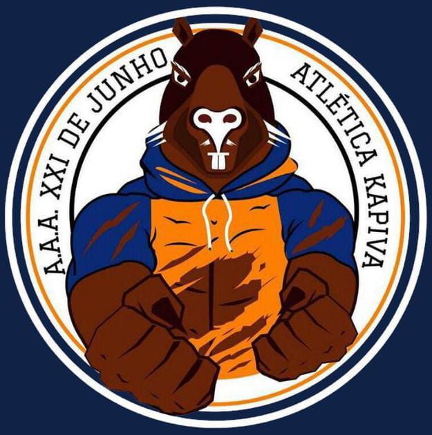

Sobre Nós
A Atlética Kapiva é a atlética do Senac Santo Amaro, fundada em 21 de junho de 2017, com o intuito de proporcionar a melhor experiência acadêmica para os alunos. Nosso objetivo é promover o esporte e a integração entre os estudantes, além de representar o Senac em diversas competições universitárias. Desde nossa fundação, buscamos continuamente aprimorar nossa estrutura e oferecer o melhor suporte aos nossos atletas. Atualmente, a Atlética Kapiva se dedica a fortalecer o espírito esportivo e a camaradagem, sendo um pilar fundamental na vida universitária dos nossos membros.
A Kapiva foi fundada com o visual:

Essa versão durou da fundação (21/06/2017) até o dia 03 de Setembro de 2018, quando a atlética passou por uma renovação e aproveitou seu post de numero 100, para divulgar a nova e também atual logo.
Contato
Para mais informações entrar em contato via instagram: @atleticakapiva.